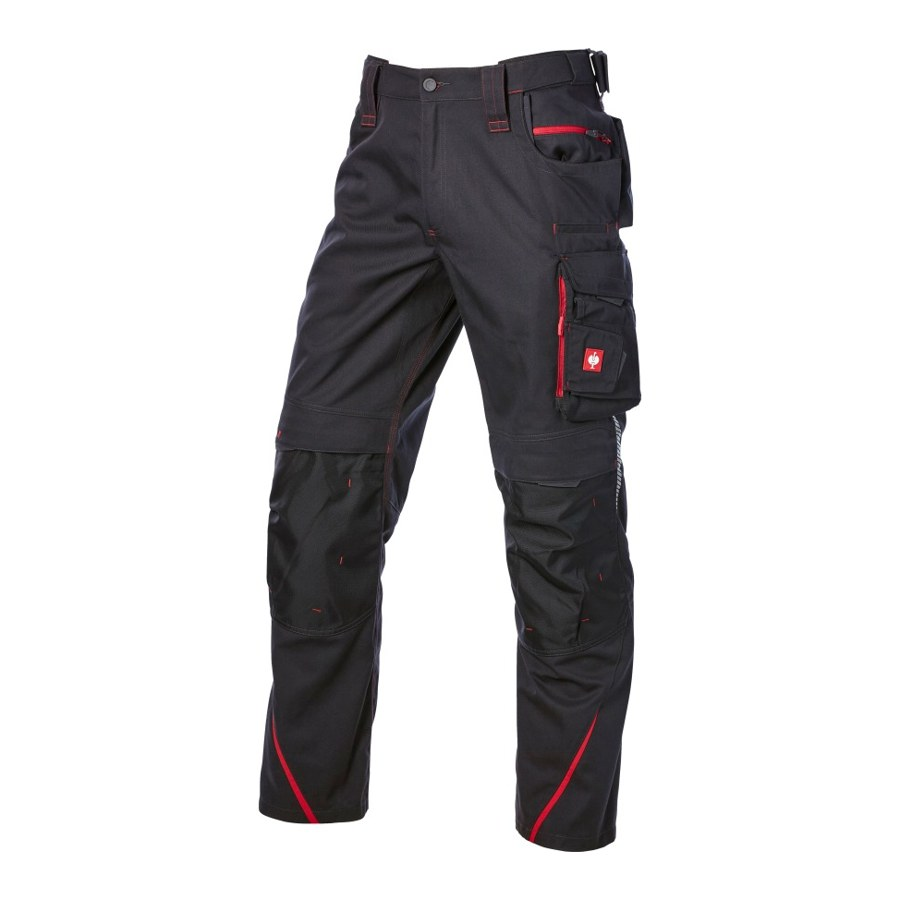
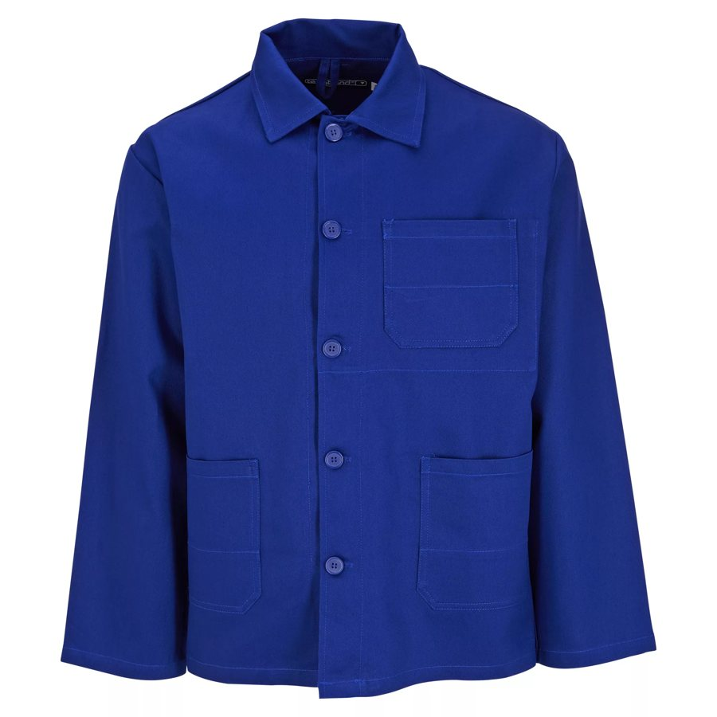
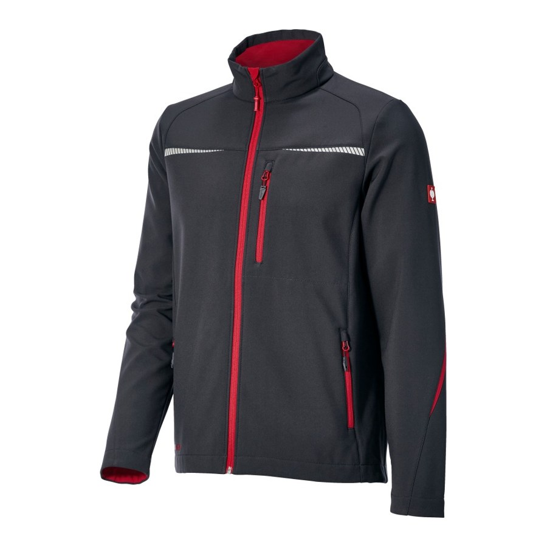
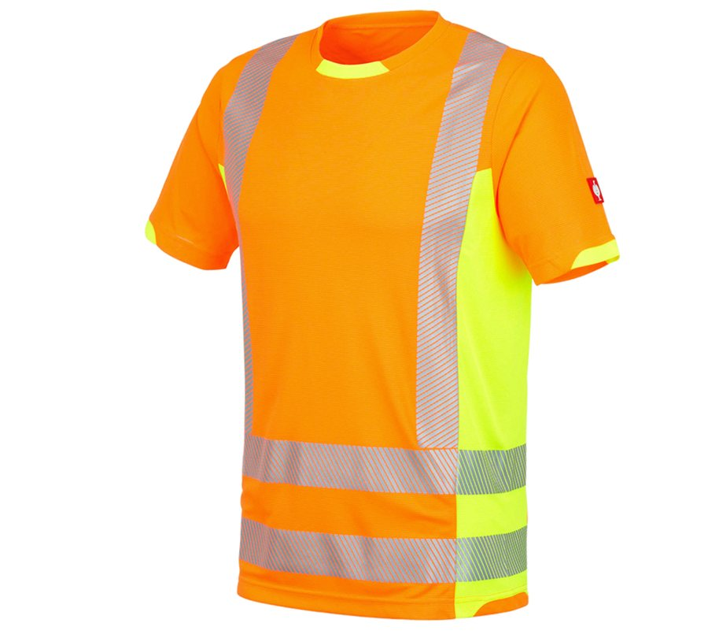
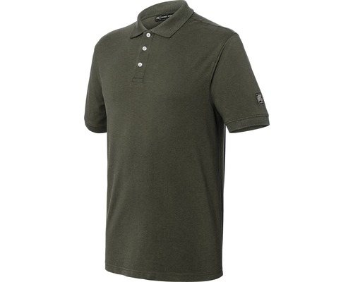
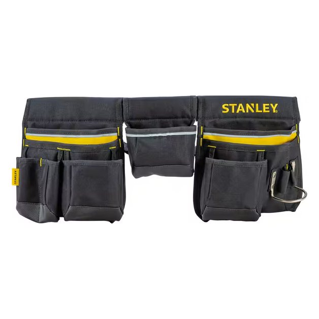
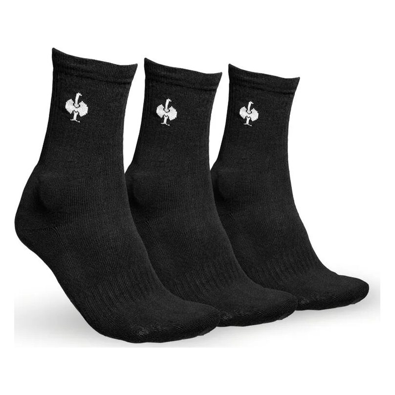

Start / Arbeitskleidung / Warnschutz-T-Shirt EN ISO 20471

Abbildung ähnlich – zeigt den Produkttyp.
Arbeitskleidung
Warnschutz-T-Shirt EN ISO 20471
Kurzarm-T-Shirt aus 100 % Polyester in Leuchtgelb oder Orange mit 5 cm breiten Reflexstreifen nach EN ISO 20471.
Das Warnschutz-T-Shirt ersetzt im Sommer die Warnweste und bietet rundum Sichtbarkeit für Straßenbau, Logistik, Garten- und Landschaftsbau sowie Veranstaltungsdienste. Entscheidend sind Leuchtfarbe und Reflexstreifen in der geforderten Mindestfläche, ein atmungsaktives, schnell trocknendes Gewebe und Reflexbänder, die Waschgänge überstehen.
Technische Daten
| Material | 100 % Polyester |
|---|---|
| Reflexstreifen | 5 cm breit, silbern |
| Farben | Leuchtgelb/Lime oder Orange/Rot |
| Größen | S bis 5XL |
| Halsausschnitt | V-Ausschnitt |
| Zolltarifnummer (HS) | 61099020 |
EU-Normen und Vorschriften
(EU) 2016/425EN ISO 20471:2013+A1:2016Hochsichtbare Warnkleidung – Prüfverfahren und Anforderungen (Klasse 1–3)EN ISO 13688:2013Schutzkleidung – Allgemeine Anforderungen (Größen, Kennzeichnung, Inhaltsstoffe)(EU) 1007/2011Textilkennzeichnung (Faserzusammensetzung)(EG) 1907/2006 REACH, Anh. XVIIBeschränkte Stoffe in Textilien (z.; B.; Azofarbstoffe)
Passt dazu

Warnweste gelb/orange, EN ISO 20471Leuchtfarbene Warnweste mit Reflexstreifen für Baustellen-, Abbruch- und Verkehrssicherung.

Warnschutzjacke EN ISO 20471, wasserdichtFluoreszierende Warnschutzjacke mit Reflexstreifen nach EN ISO 20471 für Straßenbau, Verkehrssicherung, Logistik und Baustellen mit Fahrzeugverkehr.

Warnschutz-Bundhose EN ISO 20471 Klasse 2 (Stretch, Knietaschen)Neongelbe oder neonorange Stretch-Bundhose mit Reflexstreifen nach EN ISO 20471 Klasse 2 und Knietaschen für Straßenbau, Tiefbau, Logistik und Verkehrssicherung.
Weitere Produkte dieser Kategorie

Arbeitsbundhose Baumwolle/CanvasRobuste Bundhose aus Baumwoll-Canvas mit Knie-, Cargo- und Zollstocktaschen für den täglichen Baustelleneinsatz.

Arbeits-Latzhose Baumwolle mit KniepolstertaschenStrapazierfähige Latzhose aus Baumwolle bzw. Baumwoll-Mischgewebe mit Brust-, Zollstock- und Kniepolstertaschen für Rohbau, Abbruch und Sanierung.

Arbeitsjacke (Bundjacke) Baumwolle/MischgewebeRobuste Bundjacke aus Baumwoll-Mischgewebe mit Brusttaschen, Bund und Reißverschluss für den täglichen Einsatz auf Baustelle und im Handwerk.

Softshell-Arbeitsjacke, wind- und wasserabweisendDreilagige Softshelljacke mit Fleece-Rückseite und Reflexdetails für Übergangszeit und Winterbaustelle.

Winter-Arbeitsjacke wattiert, wind- und wasserabweisendWarm wattierte Winterjacke mit wasserabweisendem Obermaterial, Fleece-Kragen und Windfangbündchen für Arbeiten im Freien bei Frost.

Arbeitspullover / Fleece-SweatshirtStrapazierfähiger Pullover aus Baumwoll-Polyester-Fleece als wärmende Zwischenschicht unter Jacke oder Weste.

Arbeits-T-Shirt BaumwolleStrapazierfähiges Rundhals-T-Shirt aus 100 % Baumwolle als Basisschicht für den Baustellenalltag.

Poloshirt Baumwolle, Arbeitsqualität (bestickbar)Formstabiles Piqué-Poloshirt aus Baumwolle mit Knopfleiste, geeignet für Logo-Stick und Druck als Firmen- und Teamkleidung.

Regenschutz-Set PU (Jacke + Hose), EN 343Wasserdichtes, verschweißtes Regenset aus PU-beschichtetem Polyester für Außenarbeiten bei Dauerregen.

Kniepolster-Paar für Arbeitshosen (Einlegepolster, EN 14404 Typ 2)Einlegepolster-Paar aus formstabilem EVA-Schaum für die Knietaschen von Arbeitshosen: dämpft den Druck beim Knien und ist als Verschleißteil günstig nachzukaufen.

Thermo-Funktionswäsche-Set für Winterarbeit (Langarmshirt + Unterhose)Zweiteiliges Basisschicht-Set aus Polyester/Elasthan mit Fleece-Innenseite für Arbeiten bei Kälte: der Unterbau unter Winterjacke und Softshell.

Arbeitsgürtel mit Werkzeug-/Nageltaschen-Set (Holstertaschen)Werkzeuggürtel aus Polyester mit Werkzeug- und Nageltaschen: verlagert das Gewicht von der Hose auf die Hüfte und hält Standardwerkzeug griffbereit.

Beheizbare Arbeitsweste (USB/Powerbank, mehrere Heizzonen)Wärmeweste mit Carbon-Heizelementen in vier Zonen und 16.000-mAh-Akku (USB-C) für Arbeiten bei Kälte.

Warnschutz-Latzhose EN ISO 20471 Klasse 2Neonfarbene Latzhose mit Reflexstreifen nach EN ISO 20471 Klasse 2, Brust- und Seitentaschen sowie Trägern für Straßen-, Tief- und Gleisbau und Logistik.

Arbeitssocken für Sicherheitsschuhe (Baumwoll-Mix, Frotteepolster, 3er-Pack)Wadenhohe Arbeitssocken aus Baumwoll-Mischgewebe mit Frotteepolster für Sicherheitsschuhe und Arbeitsstiefel, im 3er-Pack.

Schweißerschutzjacke (EN ISO 11611)

Hitze- und Flammschutz-Overall (EN ISO 11612, Baumwolle FR)

Störlichtbogen-Schutzoverall für Elektriker (IEC 61482, Arc-Kategorie 2, Baumwolle FR)

Antistatischer ESD-Arbeitsmantel (EN 1149-5 / EN 61340-5-1)

Arbeitsshorts Cargo, BaumwolleKurze Arbeitshose mit Cargo- und Werkzeugtaschen für den Sommer.

Arbeitsoverall Mischgewebe (Rundum-Overall)Einteiliger Overall aus Polyester-Baumwolle für Werkstatt und Industrie.

Regenponcho PVC wiederverwendbarWiederverwendbarer Regenponcho mit Kapuze, schnell übergezogen.

Hosenträger elastisch, X-Rücken, MetallclipsKräftige elastische Hosenträger mit Metallclips.

Fleeceweste ärmellos, ArbeitsqualitätWärmende ärmellose Fleeceweste, bestickbar.

Strickmütze (Beanie) Acryl, bestickbarWarme Acryl-Strickmütze für Winterarbeit.

Sturmhaube Balaclava Acryl/FleeceWinddichte Sturmhaube für Kälte im Freien.

Arbeitskappe Baseball-Cap Baumwolle, bestickbarVerstellbare Cap aus Baumwolle für Arbeit und Teamkleidung.